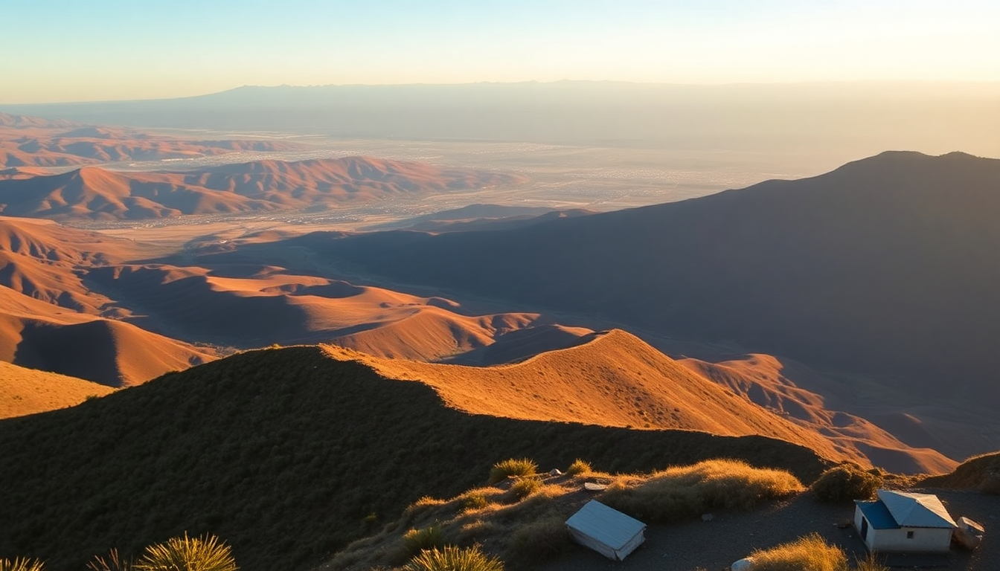

Best Day Trips from Arequipa: Colca Canyon & Volcanoes

I spent a week based in Arequipa and learned that the "White City" is the perfect hub for three very different kinds of day trips: a deep canyon, a high-altitude volcano, and the city itself. Here’s what actually worked, what felt rushed, and where you should book your bed.
Is Colca Canyon doable as a day trip from Arequipa?
Yes, but only if you take the very early tour buses (they leave Arequipa around 3:00 AM). The drive to the canyon’s edge takes about three hours, and you’ll arrive at Cruz del Condor around 8:00 AM, just as the condors catch thermals. I saw five condors circling before 9:30 AM — after that, they disappear.
The day-trip itinerary typically includes a stop at Chivay for breakfast, then a short walk along the canyon rim near Yanque. You won’t hike to the bottom (that’s a two-day trek), but you’ll get the viewpoints and the hot springs. The La Calera hot springs in Chivay are worth the entry fee — 15 soles, and the water is a legit 38°C.
- Tour tip: Book a shared minibus (around 50 soles) from Arequipa’s Terminal Terrestre rather than a full-day tour package — you save money and control your return time.
- What to pack: Sunscreen, a windbreaker (it gets windy at the rim), and cash for the hot springs entrance.
- Worth skipping: The lunch buffet in Chivay — it’s overpriced and mediocre. Instead, eat at La Casa de la Abuela in Yanque for good quinoa soup and trout.
- Return timing: Most day-trippers are back in Arequipa by 5:00 PM, which leaves time for a late dinner at La Nueva Palomino for rocoto relleno.
Where should I stay in Arequipa for easy day-trip access?
Base yourself in the historic center, specifically within three blocks of Plaza de Armas. That’s where the tour agencies pick up, and where most restaurants and sights are walkable. I stayed at Casa de Avila on Calle Jerusalén — a converted colonial mansion with a courtyard garden. Rooms start around $45 USD, and it’s quiet at night despite being central.
- Neighborhood pick: The San Lázaro district (just northeast of the plaza) has fewer crowds and cobblestone streets lined with white sillar stone buildings. It’s a 10-minute walk to the main square.
- Budget option: Selina Arequipa on Calle San Juan de Dios has a rooftop bar with volcano views, plus a co-working space if you need to work remotely.
- Splurge option: Cirqa on Calle San Agustín — a restored 16th-century monastery with a pool and a restaurant that serves excellent alpaca steak. Rates hover around $120 USD.
- Pro tip: Avoid hotels directly on Calle Mercaderes — it’s the main pedestrian drag and gets loud until midnight.
What’s the best volcano day trip from Arequipa?
The most accessible volcano hike is Misti Volcano (5,825 m / 19,101 ft). It’s a full-day commitment: start at 3:00 AM from Arequipa, drive to the trailhead at 4,500 m, then a six-hour climb to the summit. I did this with Chachani Expeditions (they provide crampons and a guide for $80 USD per person). The trail is steep scree — no technical climbing, but the altitude kicked my lungs.
If Misti sounds too intense, the half-day trip to Volcán Chachani (6,057 m) is actually easier because the terrain is less steep, though it’s higher altitude. Most tour agencies offer a “Volcanoes Tour” that drives you to the base of both Misti and Chachani for photo stops — no hiking required. That costs about 30 soles.
- What to bring for Misti: At least 2 liters of water, coca leaves (chew them for altitude), and a headlamp — you start in the dark.
- Altitude prep: Spend two full days in Arequipa (2,335 m) before attempting any volcano hike. I didn’t, and regretted it.
- Alternative: El Misti Climbing offers a shorter “conditioning hike” to the 4,800 m refugio for $50 USD — you see the crater without the summit push.
- Tour agency warning: Avoid the cheap “Misti Tour” for 40 soles sold on Calle Puente — they often skip the guided summit and just drive you to the base.
Where should I eat in Arequipa between day trips?
Arequipa’s food scene is the best in Peru outside Lima, and it’s centered around two dishes: rocoto relleno (stuffed spicy pepper) and chupe de camarones (shrimp chowder). I ate at Zig Zag on Calle Zela — it’s a touristy spot but the alpaca steak with a pisco sour is legit. The real local gem is La Lucila, a hole-in-the-wall on Calle San Francisco where a full rocoto relleno plate costs 12 soles.
- Best pisco sour: Museo del Pisco on Calle San Francisco — they make it with Quebranta grape and a touch of amargo bitters.
- Market lunch: Mercado San Camilo (Calle San Camilo) — head to the back section for the jugo stands. The papaya-lemon juice is 3 soles and pairs well with a tamal de maíz.
- Avoid: The tourist-menu places on Plaza de Armas — they charge 25 soles for a lomo saltado that’s worse than what you’d get at a corner chifa for 8 soles.
- Late-night option: El Buen Sabor on Calle Santa Catalina serves anticuchos (beef heart skewers) until 11 PM. Get the salsa de huacatay on the side.
FAQ
Is the Colca Canyon day trip worth it if I only have one day? Yes, but manage expectations. You won’t hike into the canyon, and you’ll spend about six hours total in the van. The condors at Cruz del Condor are the highlight, and the hot springs in Chivay are a solid consolation prize. If you have two days, the overnight trek to the oasis at the canyon floor is far more rewarding.
Do I need altitude sickness medication for Arequipa or Colca Canyon? Arequipa sits at 2,335 m, which most people handle fine. Colca Canyon’s rim (Chivay) is at 3,600 m — you might feel lightheaded. I used Diamox (acetazolamide) for the Misti hike, but for Colca Canyon, just drink coca tea and take it slow. You can buy coca leaves at any market for 2 soles.
How do I get from Arequipa to Chivay without a tour? Take a colectivo (shared minivan) from Arequipa’s Terminal Terrestre. They leave every 30 minutes from 5:00 AM to 2:00 PM. The fare is 25 soles per person, and the ride takes 3.5 hours. From Chivay, you can catch another colectivo to Cruz del Condor (10 soles, 40 minutes). This is cheaper than a tour and lets you stay in Chivay overnight if you want.
Conclusion
- Colca Canyon day trip works if you leave by 3 AM — focus on Cruz del Condor and Chivay’s hot springs; skip the lunch buffet.
- Base yourself near Plaza de Armas in Arequipa — try Casa de Avila for mid-range comfort, or Cirqa for a splurge.
- Misti Volcano hike is a full-day altitude challenge — book with Chachani Expeditions and prep with two days in Arequipa first.
- Eat local at La Lucila for rocoto relleno, Mercado San Camilo for fresh juice, and Museo del Pisco for pisco sours.
- Skip the tourist menus on Plaza de Armas — walk two blocks to San Lázaro for better food at half the price.